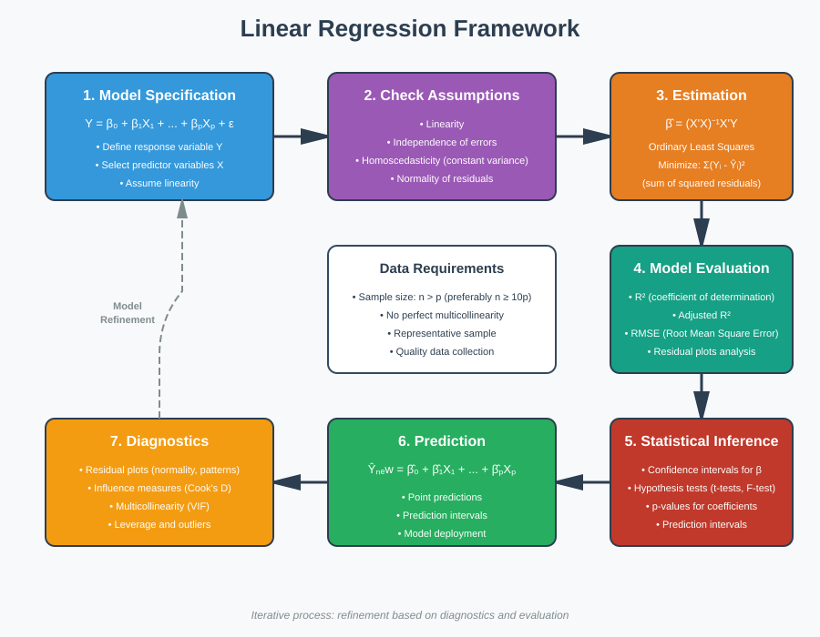
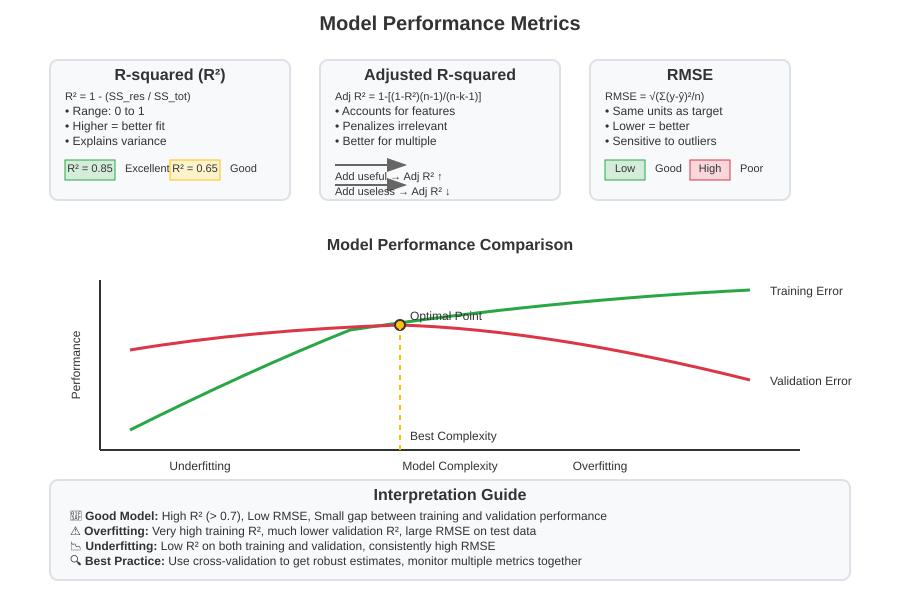
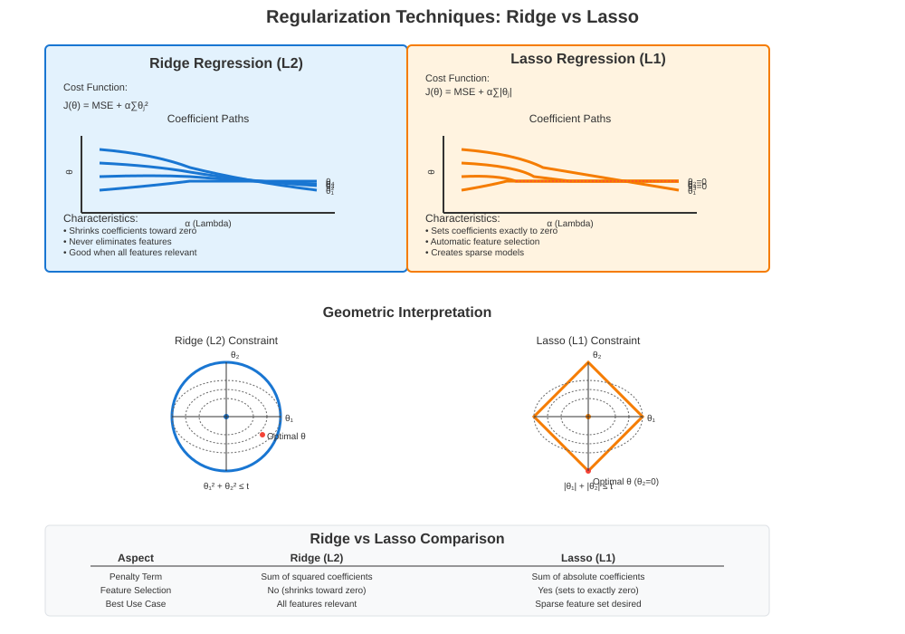
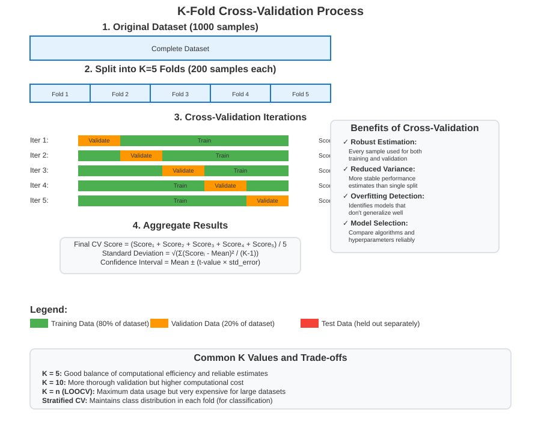
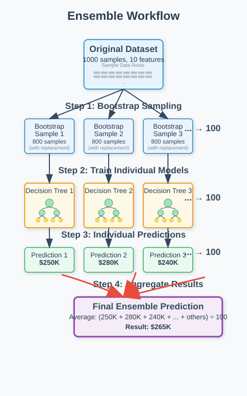
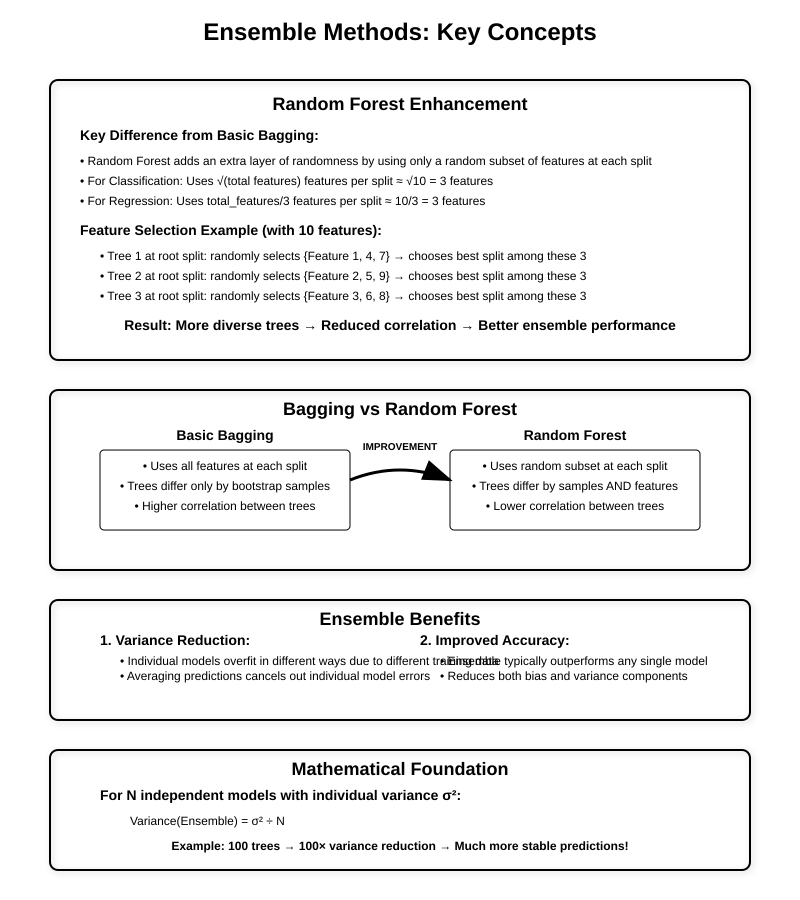

Regression Fundamentals
🧭 Quick Navigation
- Basic Terminologies
- Supervised Learning and Linear Regression
- Parameter Estimation Methods
- Model Fitting and Evaluation
- Bias-Variance Trade-off
- Model Types and Assumptions
- Regularization Techniques
- Correlation vs Causation
- Model Validation Techniques
- Tree-Based Methods
- Ensemble Methods
- References and Further Reading
📊 Basic Terminologies
Variable Types
Continuous Variables A continuous variable can take an infinite number of distinct numerical values within a given range. These variables represent measurements that can be subdivided infinitely.
Examples: - Monthly income of employees - Temperature readings - Stock prices - Height and weight measurements
Categorical Variables A categorical variable can only take a limited (finite) number of distinct values. These represent discrete categories or classes.
Examples: - Handwritten digits (0-9) - Customer satisfaction ratings (Poor, Fair, Good, Excellent) - Product categories - Geographic regions
Variable Relationships
Dependent Variables The variable to be estimated or predicted, which depends on other variables in the model. Also known as the target variable, response variable, or output variable.
Independent Variables The variables that affect or influence the dependent variable. Also known as predictor variables, features, or input variables.
Example: In a salary prediction model: - Dependent Variable: Salary - Independent Variables: Age, Education Level, Work Experience
Statistical Measures
Variance Variance measures the magnitude of spread of observed data from the mean. It quantifies how much individual data points deviate from the average.
Where:
- \(x_i\) is a data point
- \(\mu\) is the population mean
- \(n\) is the total number of data points
Standard Deviation The square root of variance, providing a more interpretable measure of spread with the same units as the original data.
Confidence Interval A range of values around a point estimate where we expect the true population parameter to lie with a certain probability (confidence level).
Key Properties: - Higher confidence levels result in wider intervals - Provides uncertainty quantification for estimates - 95% confidence interval means 95 out of 100 samples will contain the true parameter

🎯 Supervised Learning and Linear Regression
Supervised Learning Framework
Supervised learning algorithms are trained using labeled data, where both input features and correct outputs are provided during training. The algorithm learns to map inputs to outputs, enabling prediction on new, unseen data.
Key Characteristics: - Uses labeled training data - Goal is to predict outcomes for new instances - Performance can be measured against known correct answers - Similar to learning with a teacher providing feedback
Types of Supervised Learning
1. Regression Problems - Output variable is continuous - Predicts numerical values - Examples: House prices, stock values, temperature
2. Classification Problems
- Output variable is categorical
- Predicts class labels or categories
- Examples: Spam detection, image recognition, loan approval
Linear Regression Model
Linear regression finds the linear relationship between independent and dependent variables by fitting a straight line through the data.
Mathematical Formulation:
Where: - \(\theta_0^*\) is the intercept (constant term) - \(\theta_1^*\) is the slope coefficient - \(X\) is the independent variable - \(Y\) is the dependent variable - \(W\) is the error term (residual)
Error Definition: The difference between actual and predicted values:
Objective Function: Minimize the Mean Squared Error (MSE):
Best-Fit Line Equation:
Where \(Y'\) represents predicted values and \(\theta_0'\), \(\theta_1'\) are the estimated parameters.
📈 Parameter Estimation Methods
Maximum Likelihood Estimation
Maximum Likelihood Estimation (MLE) finds parameter values that maximize the probability of observing the given data.
Core Concept: For each data point \((X_i, Y_i)\), we want to maximize the likelihood of observing \(Y_i\) given \(X_i\).
Assumptions: - Data points are independent - Error terms follow normal distribution - Constant variance across all predictions
Likelihood Function: For a single observation:
Combined Likelihood: For the entire dataset:
Empirical Risk Minimization
Empirical Risk Minimization (ERM) finds parameters by minimizing the average loss over the training dataset.
Risk Definition: Higher prediction errors correspond to higher risk. The goal is to minimize collective error across all training examples.
Empirical Risk Formula:
Where \(L\) is the loss function and \(f(X_i; \theta)\) is the predicted value.
Relationship to MLE: - Higher empirical risk ↔ Lower likelihood - Lower empirical risk ↔ Higher likelihood - Both methods often lead to the same solution for linear regression
🎯 Model Fitting and Evaluation
Ordinary Least Squares (OLS)
OLS finds the best-fit line by minimizing the sum of squared differences between observed and predicted values.
Visual Approach: - Plot data points on a scatter plot - Draw a line that minimizes distances from all points - Calculate intercept and slope from the fitted line
Mathematical Approach: Minimize the sum of squared residuals:
Performance Metrics
1. R-squared (Coefficient of Determination) Measures the proportion of variance in the dependent variable explained by the model.
- Range: 0 to 1
- Higher values indicate better fit
- Interpretation: R² = 0.80 means 80% of variance is explained
2. Adjusted R-squared Modified R-squared that accounts for the number of independent variables.
- Increases only if new variables improve the model
- Decreases if variables don't add meaningful predictive power
- Better metric for multiple regression models
3. Root Mean Squared Error (RMSE) Measures the average magnitude of prediction errors.
- Lower values indicate better performance
- Same units as the dependent variable
- Sensitive to outliers

⚖️ Bias-Variance Trade-off
Key Concepts
Training Data Larger portion of data used to train the model and estimate parameters.
Validation Data Smaller portion used to validate model performance and tune hyperparameters.
Test Data Unseen data used for final model evaluation and performance assessment.
Model Complexity Determined by the number of parameters that need to be estimated. More parameters generally mean higher complexity.
Overfitting and Underfitting
Overfitting - Model performs well on training data but poorly on test data - Learns noise and random patterns in training data - High variance, low bias - Signs: Large gap between training and test performance
Underfitting - Model performs poorly on both training and test data - Too simple to capture underlying patterns - High bias, low variance - Signs: Poor performance across all datasets
Bias and Variance Definitions
Bias The amount that a model's predictions systematically differ from the true values. Represents errors from oversimplifying assumptions.
- High Bias: Model consistently misses relevant patterns (underfitting)
- Low Bias: Model captures true relationships well
Variance The amount that predictions would change if trained on different datasets. Represents sensitivity to training data variations.
- High Variance: Model predictions vary significantly with different training sets (overfitting)
- Low Variance: Model predictions are consistent across different training sets
The Trade-off
Fundamental Relationship:
- Increasing model complexity: ↓ Bias, ↑ Variance
- Decreasing model complexity: ↑ Bias, ↓ Variance
Optimal Balance: The best model minimizes total error = Bias² + Variance + Irreducible Error

🔧 Model Types and Assumptions
Linear vs Non-Linear Models
Linear Models Each term is either a constant or a product of a parameter and a variable.
Example: \(\hat{Y} = \beta_0 + \beta_1 X_1 + \beta_2 X_2 + ... + \beta_n X_n\)
Non-Linear Models
Do not follow linear combination rules.
Example: \(\hat{Y} = \tanh(\beta_0 + \beta_1 X_1 + \beta_2 X_2)\)
Parametric vs Non-Parametric Models
Parametric Models - Make assumptions about data distribution - Characterized by fixed set of parameters - Examples: Linear regression, logistic regression - More efficient when assumptions are met
Non-Parametric Models - Make minimal assumptions about data distribution - Flexible structure adapts to data - Examples: Decision trees, k-nearest neighbors - More robust but potentially less efficient
Linear Regression Assumptions
1. Linearity The relationship between independent and dependent variables must be linear.
Validation: Plot residuals vs. fitted values; should show random scatter.
2. No Multicollinearity Independent variables should not be highly correlated with each other.
Issues: Reduces coefficient precision and statistical power. Detection: Calculate Variance Inflation Factor (VIF).
3. Homoscedasticity Error terms should have constant variance across all levels of independent variables.
Validation: Residual plots should show consistent spread.
4. Normal Distribution of Errors Error terms should follow a normal distribution.
Importance: Ensures reliable confidence intervals and hypothesis tests.
5. No Endogeneity
Independent variables should not be correlated with error terms.
Impact: Leads to biased parameter estimates if violated.
🎛️ Regularization Techniques
Regularization Overview
Regularization prevents overfitting by adding penalty terms to the cost function, reducing the influence of less important variables.
When to Use: - High number of features - Risk of overfitting - Need for feature selection
Ridge Regression (L2 Regularization)
Adds a penalty term equal to the sum of squared coefficients.
Cost Function:
Where:
- \(\alpha\) is the regularization parameter
- \(n\) is the number of observations
- \(m\) is the number of features
Characteristics: - Shrinks coefficients toward zero but doesn't eliminate them - Handles multicollinearity well - Suitable when all features are relevant
Lasso Regression (L1 Regularization)
Adds a penalty term equal to the sum of absolute values of coefficients.
Cost Function:
Characteristics: - Can drive coefficients exactly to zero - Performs automatic feature selection - Suitable when only subset of features are relevant - Creates sparse models
Comparison
| Aspect | Ridge (L2) | Lasso (L1) |
|---|---|---|
| Penalty | Sum of squared coefficients | Sum of absolute coefficients |
| Feature Selection | No | Yes |
| Coefficient Behavior | Shrinks toward zero | Can become exactly zero |
| Best Use Case | All features relevant | Sparse feature set desired |

🔗 Correlation vs Causation
Understanding Correlation
Correlation indicates a relationship or pattern between two variables, measurable through statistical metrics and visualizable through scatter plots.
Types of Correlation
Positive Correlation - When one variable increases, the other also increases - Correlation coefficient: 0 < r ≤ 1 - Example: Hours studied vs. exam scores
Negative Correlation
- When one variable increases, the other decreases
- Correlation coefficient: -1 ≤ r < 0
- Example: Price vs. demand (typically)
No Correlation - Variables show no systematic relationship - Correlation coefficient: r ≈ 0 - Random scatter in plots
Understanding Causation
Causation means one event directly causes another event to occur. Establishing causation requires:
- Temporal Precedence: Cause must precede effect
- Covariation: Cause and effect must be correlated
- No Confounding: Alternative explanations ruled out
Critical Distinction
Correlation ≠ Causation
Classic Example: - Ice cream sales and air conditioner sales are positively correlated - Both are caused by a third variable: hot weather - Neither directly causes the other
Common Issues: - Third Variable Problem: Hidden factors influencing both variables - Reverse Causation: Effect might actually cause the presumed cause - Spurious Correlation: Random coincidence in data patterns
Best Practices: - Use controlled experiments to establish causation - Consider alternative explanations - Look for confounding variables - Distinguish correlation-based predictions from causal claims
✅ Model Validation Techniques
Cross-Validation
Cross-validation assesses how well a model generalizes to unseen data by systematically testing on different data subsets.
K-Fold Cross-Validation
Process: 1. Divide dataset into K equal-sized folds 2. For each iteration: - Use K-1 folds for training - Use 1 fold for validation - Calculate performance metrics 3. Average results across all K iterations
Example with K=5: - Dataset: 1000 observations → 5 folds of 200 observations each - Iteration 1: Train on folds 2-5, validate on fold 1 - Iteration 2: Train on folds 1,3-5, validate on fold 2 - Continue for all 5 iterations
Advantages: - Every data point used for both training and validation - Reduces variance in performance estimates - More reliable than single train-test split
Common Values: - K=5: Good balance of computational cost and reliability - K=10: More thorough but computationally expensive - K=n (Leave-One-Out): Maximum thoroughness, highest computational cost

Bootstrapping
Definition: Statistical procedure that resamples a single dataset to create many simulated samples using sampling with replacement.
Process: 1. Randomly select observations from original dataset 2. Allow same observation to be selected multiple times 3. Create bootstrap sample of desired size 4. Repeat to create many bootstrap samples 5. Train models on each bootstrap sample 6. Aggregate results for final estimates
Key Characteristics: - Each item has equal probability of selection in each draw - Bootstrap sample size can be ≤ original dataset size - Some observations may appear multiple times, others not at all
Applications: - Estimating confidence intervals - Model stability assessment - Ensemble method foundation (bagging)
🌳 Tree-Based Methods
Decision Trees
Decision trees use hierarchical structures to make predictions by recursively splitting data into smaller subsets based on feature values.
How Decision Trees Work
Binary Splitting Process: 1. Top-Down Approach: Start with entire dataset at root 2. Greedy Selection: Choose best split at each step 3. Recursive Division: Continue splitting until stopping criteria met
Split Selection Criteria: For regression trees, minimize Residual Sum of Squares (RSS):
Splitting Algorithm: 1. For each feature j and cutpoint s:
- Find j and s that minimize:
Key Terminology
Root Node: Starting point containing all observations
Internal Nodes: Points where splits occur based on feature conditions
Leaf Nodes: Terminal nodes containing final predictions
Branches: Connections between nodes representing decision paths
Tree Depth: Number of levels from root to furthest leaf
Advantages and Disadvantages
Advantages: - Highly interpretable - Handles non-linear relationships - No assumptions about data distribution - Automatic feature selection
Disadvantages: - Prone to overfitting - Unstable (small data changes can create very different trees) - Biased toward features with more levels

🎯 Ensemble Methods
Ensemble Learning Overview
Ensemble methods combine multiple models (base learners) to create stronger predictive performance than individual models alone.
Core Principle: "Wisdom of crowds" - multiple diverse models can collectively make better decisions.
Bagging (Bootstrap Aggregating)
Process:
1. Bootstrap: Create multiple bootstrap samples from training data
2. Train: Build separate model on each bootstrap sample
3. Aggregate: Combine predictions from all models
For Regression: Average all model predictions For Classification: Use majority voting
Key Benefits: - Reduces overfitting - Decreases model variance - Improves stability - Parallel training possible
Random Forest
Random Forest enhances bagging by adding feature randomness to decision tree base learners.
Algorithm: 1. Create bootstrap samples from training data 2. For each sample, build decision tree with constraints: - At each split, consider only random subset of features - Choose best split from selected features only 3. Combine predictions from all trees
Key Parameters: - Number of trees: More trees generally improve performance - Features per split: Typically √(total features) for classification, total_features/3 for regression - Max depth: Controls individual tree complexity
Advantages over Single Decision Trees: - Significantly reduced overfitting - Better generalization - Implicit feature importance ranking - Robust to outliers and noise
Prediction Process:
Regression: \(\(\hat{y} = \frac{1}{B}\sum_{b=1}^{B}\hat{y}_b\)\)
Classification: \(\(\hat{y} = \text{mode}\{\hat{y}_1, \hat{y}_2, ..., \hat{y}_B\}\)\)
Where B is the number of trees.
Feature Importance: Random Forest calculates feature importance based on how much each feature decreases impurity across all trees.


Comparison Summary
| Method | Base Learner | Feature Selection | Primary Benefit |
|---|---|---|---|
| Bagging | Any algorithm | All features | Variance reduction |
| Random Forest | Decision trees | Random subset | Variance reduction + Feature selection |
📚 References and Further Reading
Core Textbooks
- Hastie, T., Tibshirani, R., & Friedman, J. (2009). The Elements of Statistical Learning: Data Mining, Inference, and Prediction. Springer. Available online
- James, G., Witten, D., Hastie, T., & Tibshirani, R. (2013). An Introduction to Statistical Learning with Applications in R. Springer. Available online
Statistical Foundations
- Montgomery, D. C., Peck, E. A., & Vining, G. G. (2012). Introduction to Linear Regression Analysis (5th Edition). Wiley.
- Wasserman, L. (2004). All of Statistics: A Concise Course in Statistical Inference. Springer.
Machine Learning Practice
- Géron, A. (2019). Hands-On Machine Learning with Scikit-Learn, Keras, and TensorFlow (2nd Edition). O'Reilly Media.
- Kuhn, M. & Johnson, K. (2013). Applied Predictive Modeling. Springer.
Research Papers and Articles
- Breiman, L. (2001). "Random Forests." Machine Learning, 45(1), 5-32. DOI: 10.1023/A:1010933404324
- Tibshirani, R. (1996). "Regression Shrinkage and Selection via the Lasso." Journal of the Royal Statistical Society: Series B, 58(1), 267-288.
Online Resources
- Coursera Machine Learning Course by Andrew Ng: Course Link
- Scikit-learn Documentation: https://scikit-learn.org/stable/
This documentation provides a comprehensive foundation for understanding machine learning fundamentals, from basic statistical concepts through advanced ensemble methods. The mathematical rigor combined with practical insights makes it suitable for both academic study and professional application.